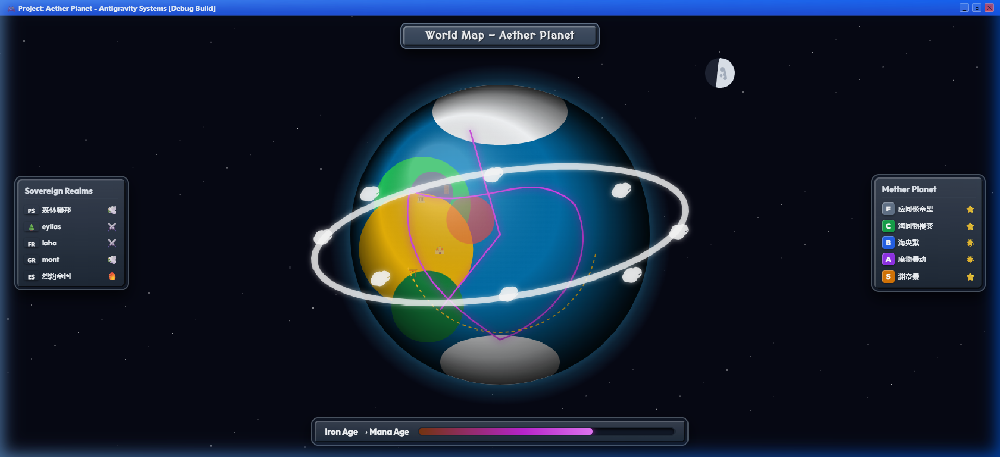

An autonomous living simulation and sovereign RPG where procedural terrain generation, stochastic awakening ceremonies, and continuous Infinite Axis Utility AI converge into an emergent digital world.
Static worlds feel dead. Realities must breathe on their own.
Traditional RPG worlds rely on scripted waypoints and hard-coded state machines. NPCs walk pre-baked loops, respond to player proximity with predetermined dialogue trees, and remain entirely blind to the macro-economic state of their settlement.
The core thesis behind Genesis Cogniverse was to invert this paradigm: create an autonomous God Simulator where every villager operates as an independent agent evaluating continuous utility curves across multiple life axes—hunger, religious awakening, resource scarcity, and survival instinct.
FIG 1.0 — TACTICAL VILLAGE VIEW: Multi-layer TileMapLayer rendering cottages, farmlands, and autonomous villagers.

FIG 1.1 — COSMIC WORLD VIEW: Multi-octave FastNoiseLite 128×128 biome elevation and moisture topology.
02 // ARCHITECTURE IN PRACTICE
Continuous utility scoring, zero scripted tracks.
SYSTEM ARCHITECTURE PIPELINE // COGNIVERSE ENGINE
STEP 01
Procedural Pixel-Art Atlas Synthesis
Rather than loading static spritesheets from disk, the engine embeds a programmatic atlas generator (CustomTilesetGenerator.gd) that paints a 32×32 pixel terrain texture procedurally into memory on launch across 12 distinct biomes, 8 settlement structures, and 10 geological mine types.
STEP 02
Infinite Axis Utility AI
Every NPC executes a multi-axis utility evaluation function every frame. Instead of binary boolean checks, priorities curve non-linearly using polynomial response curves. When communal granaries run below 15% capacity, agricultural foraging scores spike exponentially across all farm-capable villagers.
STEP 03
Stochastic Awakening Ceremonies
Upon reaching age 16, youth make a pilgrimage to the Temple of Ascension. The engine rolls stochastic rank probabilities from Common Rank F (40%) to Demigod Rank SSS (0.1%), allocating stat multipliers and permanent visual aura particle shaders that dictate their role in the sovereign hierarchy.
03 // ENGINEERING BENCHMARKS
Sovereign scale at locked 60 frames per second.
128×128
World Grid Cells
10 Tiers
Geological Mine Systems
0.1%
SSS Rank Stochastic Tier
60 FPS
Locked Simulation Loop
By offloading entity pathfinding to navigation server threads and using Rust for heavy data structures, the simulation maintains a deterministic 60 FPS update loop while tracking hundreds of autonomous citizens across continuous day/night CanvasModulate cycles.